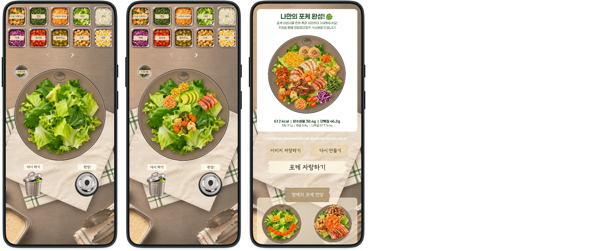
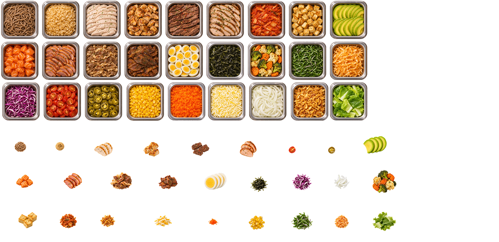
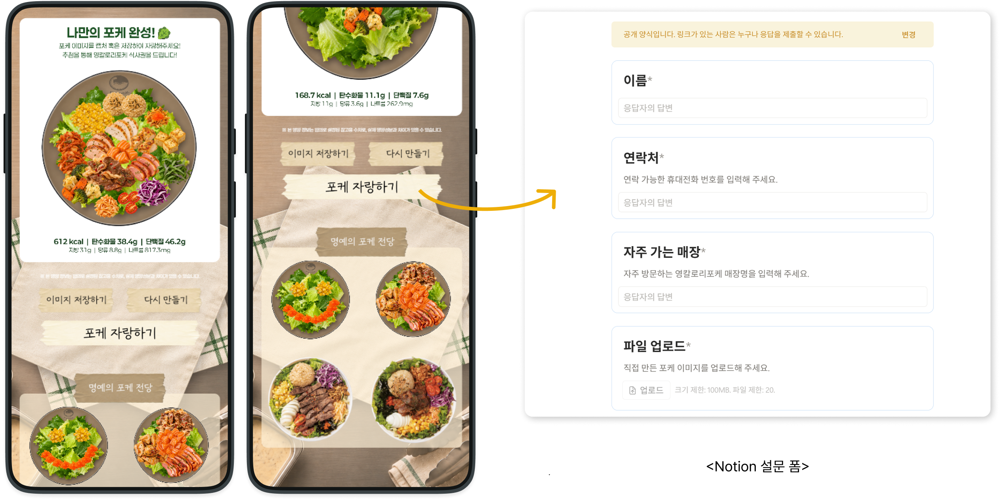

건강한 한 끼를 즐기는 새로운 방법
나만의 포케 만들기
Project Overview
브랜드와 고객의 접점을 단순한 메뉴 홍보에서 직접 참여하고 즐길 수 있는 브랜드 경험으로 확장하고자 인터랙티브 웹 콘텐츠를 제작했습니다.
고객이 원하는 재료를 직접 선택하고 배치하여 자신만의 포케를
완성하는 게임으로,
엔터테인먼트 요소와 영양 정보, 참여형 이벤트를 결합했습니다.
건강한 식단을 어렵게 느끼기보다 놀이처럼 경험하고, 자연스럽게
브랜드와 소통할 수 있도록 기획했습니다.

Design Concept
실제 포케를 만드는 과정에서 영감을 받아 스테인리스 작업대와 식재료
트레이를 활용해 게임 화면을 디자인했습니다.
실제 매장에서 포케를 만드는 듯한 몰입감을
전달하고자 했습니다.
총 27종의 식재료를 탄수화물, 야채, 서브토핑, 메인토핑으로 구성하고, 드래그 앤 드롭 방식을 적용하여 누구나 직관적으로 재료를 선택하고 자유롭게 배치할 수 있도록 설계했습니다.
AI Image Production
실제 매장에서 사용하는 식재료를 기반으로 GPT를 활용해 각각의 재료
이미지를 제작했습니다.
재료의 형태와 질감, 색감, 촬영 각도를 통일하고 개별 이미지의
배경을 제거하여 게임 내에서 자연스럽게 합성될 수 있도록
제작했습니다.
여러 재료를 자유롭게 조합하더라도 하나의 완성된 음식 이미지처럼 보일 수 있도록 재료별 크기와 비율, 시각적 일관성을 고려했습니다.

Interactive Experience
각 식재료에 열량, 탄수화물, 단백질, 지방, 당류, 나트륨 등의 영양 데이터를 적용하여 재료를 추가하거나 삭제할 때마다 영양성분이 실시간으로 변화하도록 개발했습니다.
단순히 포케를 꾸미는 게임에서 나아가 자신이 선택한 식재료의 영양
구성을 확인할 수 있도록 하여
재미와 건강한 식단에 대한 관심을 연결했습니다.
영양 정보는 게임 내 참고용 수치로 제공했습니다.
완성된 포케는 이미지로 저장하고 공유할 수 있도록 구현하여 개인의 취향이 담긴 결과물이 하나의 콘텐츠로 이어지도록 구성했습니다.
Event & Engagement
고객이 직접 완성한 포케를 공유하고 다른 참여자의 포케도 확인할 수 있도록 명예의 전당을 마련했습니다.
매월 참여작 중 명예 포케를 선정하는 이벤트를 진행하여 일회성 게임 체험에 그치지 않고 지속적인 참여와 재방문을 유도하고자 했습니다.
브랜드가 일방적으로 콘텐츠를 전달하는 방식에서 벗어나, 고객이 직접 콘텐츠를 만들고 공유하며 이벤트에 참여하는 양방향 브랜드 커뮤니케이션을 기획했습니다.

Project Value
AI 이미지 제작부터 UI/UX 디자인, 인터랙티브 웹 개발, 고객 참여형 이벤트까지 하나의 콘텐츠로 연결한 프로젝트입니다.
Entertainment + Wellness + Engagement
건강한 식단이라는 브랜드의 핵심 가치를 재미있는 경험으로 풀어내고,
고객이 브랜드 콘텐츠의 소비자를 넘어 직접 참여하는 주체가 될 수
있도록 설계했습니다.